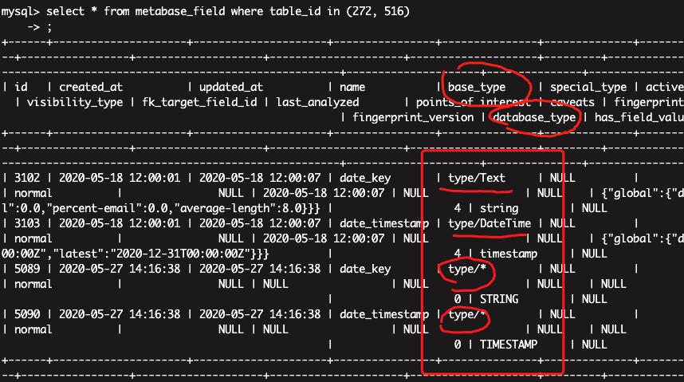
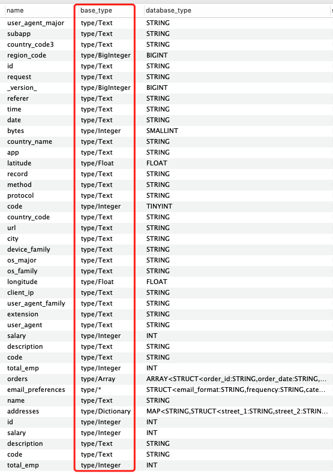
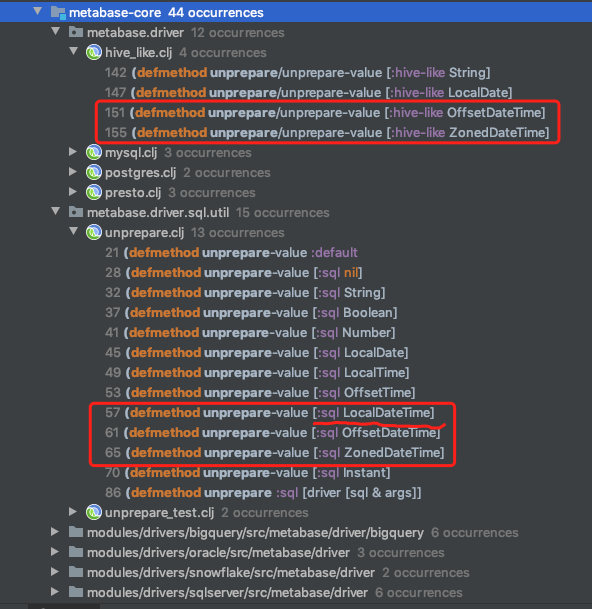
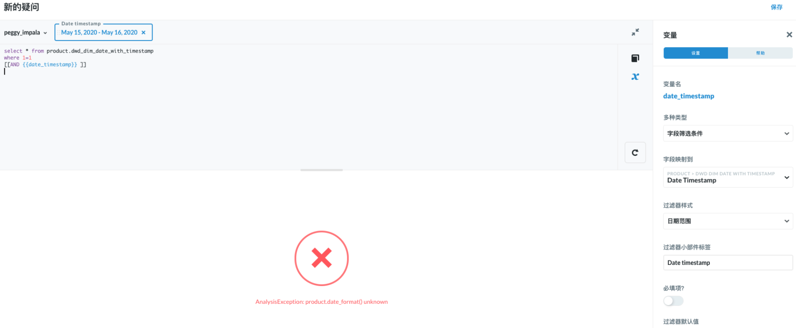
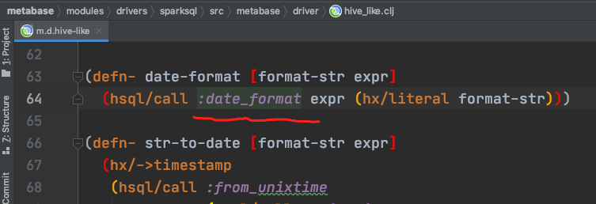
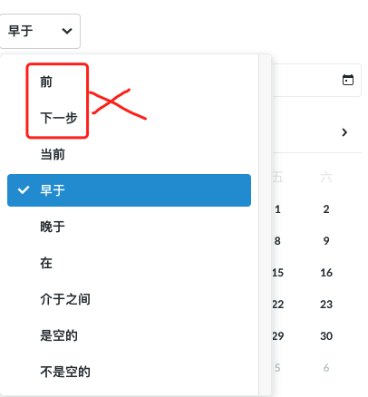

体验过程中还是碰到不少问题。
1. TIMESTAMP 类型没有过滤器样式
现象
连 SparkSQL 没这个问题。同样是TIMESTAMP类型，表现不同。
初步分析
在数据库中查看存储的字段信息，Impala/SparkSQL对比看，发现 Impala 数据库下的字段 base_type 都是 type/*。而 database_type，Impala 都是大写的，比如TIMESTAMP，而不是timestamp。所以，并不仅仅是TIMESTAMP类型没有过滤器样式。

Metabase 数据库类型会映射为 Clojure类型，数据库类型的名称是大小写敏感的。所以不能复用hive-like中的实现（都是小写的），而且Hive与Impala的类型还是有些不同的。
Hive Impala的数据类型异同
以 Hive Data Types 为基准。
| Type Name | Type Catgory | Comment | Impala Support? |
|---|---|---|---|
| TINYINT | Numeric Types | Yes | |
| SMALLINT | Numeric Types | Yes | |
| INT | Numeric Types | Yes | |
| BIGINT | Numeric Types | Yes | |
| FLOAT | Numeric Types | Yes | |
| DOUBLE | Numeric Types | Yes | |
| DOUBLE PRECISION | Numeric Types | alias for DOUBLE, only available starting with Hive 2.2.0 | No |
| DECIMAL | Numeric Types | Introduced in Hive 0.11.0 with a precision of 38 digitsHive 0.13.0 introduced user-definable precision and scale | Yes |
| NUMERIC | Numeric Types | same as DECIMAL, starting with Hive 3.0.0 | No |
| TIMESTAMP | Date/Time Types | available starting with Hive 0.8.0 | Yes |
| DATE | Date/Time Types | available starting with Hive 0.12.0 | No |
| INTERVAL | Date/Time Types | available starting with Hive 1.2.0 | No |
| STRING | String Types | Yes | |
| VARCHAR | String Types | available starting with Hive 0.12.0 | Yes |
| CHAR | String Types | available starting with Hive 0.13.0 | Yes |
| BOOLEAN | Misc Types | Yes | |
| BINARY | Misc Types | available starting with Hive 0.8.0 | No |
| arrays: ARRAY<data_type> | Complex Types | Yes | |
| maps: MAP<primitive_type, data_type> | Complex Types | Yes | |
| structs: STRUCT<col_name : data_type [COMMENT col_comment], …> | Complex Types | Yes | |
| union: UNIONTYPE<data_type, data_type, …> | Complex Types | No |
参考：
- Hive Data Types https://cwiki.apache.org/confluence/display/Hive/LanguageManual+Types
- Impala Data Types https://docs.cloudera.com/documentation/enterprise/latest/topics/impala_datatypes.html
- SQL Differences Between Impala and Hive https://docs.cloudera.com/documentation/enterprise/6/6.3/topics/impala_langref_unsupported.html
fix
根据与Hive数据类型对比，重写方法 sql-jdbc.sync/database-type->base-type。
(defmethod sql-jdbc.sync/database-type->base-type :impala
[_ database-type]
(condp re-matches (name database-type)
#"TINYINT" :type/Integer
#"SMALLINT" :type/Integer
#"INT" :type/Integer
#"BIGINT" :type/BigInteger
#"FLOAT" :type/Float
#"DOUBLE" :type/Float
#"DECIMAL.*" :type/Decimal
#"TIMESTAMP" :type/DateTime
#"STRING.*" :type/Text
#"VARCHAR.*" :type/Text
#"CHAR.*" :type/Text
#"BOOLEAN" :type/Boolean
#"ARRAY.*" :type/Array
#"MAP.*" :type/Dictionary
#".*" :type/*))
https://github.com/XUJiahua/metabase/pull/2/commits/e156683989844eb2405e5240e888249a2defe78c
效果：

这样，TIMESTAMP 类型就有过滤器样式了。
2. timestamp xxx 报错信息
现象
“ParseException: Syntax error in line 4:\nAND date_timestamp < timestamp ‘2019-01-03 00:00:00.000’\n ^\nEncountered: TIMESTAMP\nExpected: CASE, CAST, DEFAULT, EXISTS, FALSE, IF, INTERVAL, LEFT, NOT, NULL, REPLACE, RIGHT, TRUNCATE, TRUE, IDENTIFIER\n\nCAUSED BY: Exception: Syntax error\n”,
SQL过滤器测试用例：
select * from product.dwd_dim_date_with_timestamp
where 1=1
[[AND date_timestamp < {{date_timestamp}} ]]
洪敏眼尖，发现是 Impala 不支持这个语法。
分析
hive-like 并没有重写处理 LocalDateTime 的方法。

而 Impala TIMESTAMP是没有时区的，大概率会用这个方法。
In Impala, the TIMESTAMP data type holds a value of date and time. It can be decomposed into year, month, day, hour, minute and seconds fields, but with no time zone information available, it does not correspond to any specific point in time. https://docs.cloudera.com/documentation/enterprise/6/6.3/topics/impala_timestamp.html
默认实现是 timestamp 语法，报错信息就在这。
(defmethod unprepare-value [:sql LocalDateTime]
[_ t]
(format "timestamp '%s'" (t/format "yyyy-MM-dd HH:mm:ss.SSS" t)))
fix
找到 Impala 对应的 SQL 函数。
(defmethod unprepare/unprepare-value [:impala LocalDateTime]
[_ t]
(format "to_timestamp('%s', 'yyyy-MM-dd HH:mm:ss')" (t/format "yyyy-MM-dd HH:mm:ss" t)))
https://github.com/XUJiahua/metabase/pull/2/commits/005b878caf2fbbbd8c00a7ed016c899187f59d3c
3. date_format() unknown
现象

分析
大概率又是 Impala 不支持 date_format 这个函数。代码中搜索关键字。

这里简单说明下，(hsql/call :date_format xx xx) 这个方法最终会生成 SQL语句 date_format(xx, xx)。又一次，我们得找到 Impala 中的SQL函数来替代它。
参考：
- Hive/SparkSQL Built-in Functions https://spark.apache.org/docs/2.4.5/api/sql/index.html#date_format
- Impala Built-In Functions https://docs.cloudera.com/documentation/enterprise/6/6.3/topics/impala_functions.html
- Impala Date and Time Functions https://docs.cloudera.com/documentation/enterprise/6/6.3/topics/impala_datetime_functions.html
fix
因为 date-format 被应用中很多 defmethod sql.qp/date 方法里，所以在 Impala 重新实现这些方法，尽可能用 Impala 内置的函数。
https://github.com/XUJiahua/metabase/pull/2/commits/01046a664dc8bc9d815184fd6ec419b7a4c1aa10
总结
这些问题主要还是 Impala 和 Hive 的 SQL 规范不一样。令人头秃。不过对 Metabase 越来越熟悉了。
未完待续
这2个选项还在报错，应该是不支持对应的方法。还好暂时用不到。

Last modified on 2020-05-28